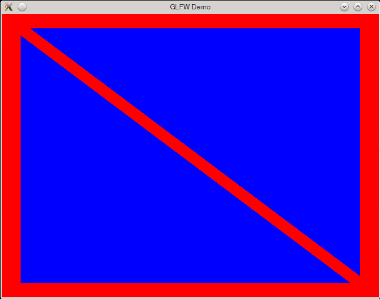

Post-Post Modern OpenGL in Haskell 3
We continue with introducing basic vertex/fragment shader support, vertex buffer array object.
In this tutorial we are finally going to draw our first triangles and, as we are going to see, it adds a chunk of complexity to our code - in fact enough to feel that there could be another tutorial in-between tutorial01 and tutorial02 as there’s a noticable spike between the two at the moment. For now - fasten your seat-belts - we are going for a ride!
Parts of the code and module LoadShaders taken from svenpanne GLUT example files
The code was modified in order to exclude GLUT dependencies.
The main addition on top what we have done in previous tutorials is the initRsources function, that is doing the following things:
- Generates and binds an object name “triangles” to a VertexArrayObject:
initResources :: IO Descriptor
initResources = do
triangles <- genObjectName
bindVertexArrayObject $= Just triangles
2) Creates a list of values of type Vertex2 (to store vertex positions):
let vertices = [
Vertex2 (-0.90) (-0.90), -- Triangle 1
Vertex2 0.85 (-0.90),
Vertex2 (-0.90) 0.85 ,
Vertex2 0.90 (-0.85), -- Triangle 2
Vertex2 0.90 0.90 ,
Vertex2 (-0.85) 0.90 ] :: [Vertex2 GLfloat]
3) Generates, binds an object name arrayBuffer to an ArrayBuffer and writes the vertices list to memory:
arrayBuffer <- genObjectName
bindBuffer ArrayBuffer $= Just arrayBuffer
withArray vertices $ \ptr -> do
let size = fromIntegral (numVertices * sizeOf (head vertices))
bufferData ArrayBuffer $= (size, ptr, StaticDraw)
4) Gives and index and initializes a pointer to the memory address that conains the vertices positions.
let firstIndex = 0
vPosition = AttribLocation 0
vertexAttribPointer vPosition $=
(ToFloat, VertexArrayDescriptor 2 Float 0 (bufferOffset firstIndex))
vertexAttribArray vPosition $= Enabled
That makes this data accessible in the vertex shader:
layout(location = 0) in vec4 vPosition;
5) Finally we bind vertex and fragment shaders to the current program, and return the Dexscriptor object to the main loop:
data Descriptor = Descriptor VertexArrayObject ArrayIndex NumArrayIndices
...
program <- loadShaders [
ShaderInfo VertexShader (FileSource "triangles.vert"),
ShaderInfo FragmentShader (FileSource "triangles.frac")]
currentProgram $= Just program
return $ Descriptor triangles firstIndex (fromIntegral numVertices)Phew! That was quite a mouthfull. A similar program in C++ could still run without GLSL shading part. Unfortunately it does not work with this example. If there’s a way - one day this tutorial may be split into two separate ones.
Here’s the whole program:
module Main where
import Graphics.Rendering.OpenGL as GL
import Graphics.UI.GLFW as GLFW
import Control.Monad
import LoadShaders
import Foreign.Marshal.Array
import Foreign.Ptr
import Foreign.Storable
bufferOffset :: Integral a => a -> Ptr b
bufferOffset = plusPtr nullPtr . fromIntegral
data Descriptor = Descriptor VertexArrayObject ArrayIndex NumArrayIndices
initResources :: IO Descriptor
initResources = do
triangles <- genObjectName
bindVertexArrayObject $= Just triangles
let vertices = [
Vertex2 (-0.90) (-0.90), -- Triangle 1
Vertex2 0.85 (-0.90),
Vertex2 (-0.90) 0.85 ,
Vertex2 0.90 (-0.85), -- Triangle 2
Vertex2 0.90 0.90 ,
Vertex2 (-0.85) 0.90 ] :: [Vertex2 GLfloat]
numVertices = length vertices
arrayBuffer <- genObjectName
bindBuffer ArrayBuffer $= Just arrayBuffer
withArray vertices $ \ptr -> do
let size = fromIntegral (numVertices * sizeOf (head vertices))
bufferData ArrayBuffer $= (size, ptr, StaticDraw)
let firstIndex = 0
vPosition = AttribLocation 0
vertexAttribPointer vPosition $=
(ToFloat, VertexArrayDescriptor 2 Float 0 (bufferOffset firstIndex))
vertexAttribArray vPosition $= Enabled
program <- loadShaders [
ShaderInfo VertexShader (FileSource "triangles.vert"),
ShaderInfo FragmentShader (FileSource "triangles.frac")]
currentProgram $= Just program
return $ Descriptor triangles firstIndex (fromIntegral numVertices)
resizeWindow :: Size -> IO ()
resizeWindow size@(GL.Size w h) =
do
GL.viewport $= (GL.Position 0 0, size)
GL.matrixMode $= GL.Projection
GL.loadIdentity
GL.ortho2D 0 (realToFrac w) (realToFrac h) 0
main :: IO ()
main = do
GLFW.initialize
GLFW.openWindow (GL.Size 640 480) [] GLFW.Window
GLFW.windowTitle $= "GLFW Demo"
GLFW.windowSizeCallback $= resizeWindow
descriptor <- initResources
onDisplay descriptor
GLFW.closeWindow
GLFW.terminate
onDisplay :: Descriptor -> IO ()
onDisplay descriptor@(Descriptor triangles firstIndex numVertices) = do
GL.clearColor $= Color4 1 0 0 1
GL.clear [ColorBuffer]
bindVertexArrayObject $= Just triangles
drawArrays Triangles firstIndex numVertices
GLFW.swapBuffers
p <- GLFW.getKey GLFW.ESC
unless (p == GLFW.Press) $ onDisplay descriptor
tutorial files on git

In the next tutorial we are going to expand our example with vertex colors.